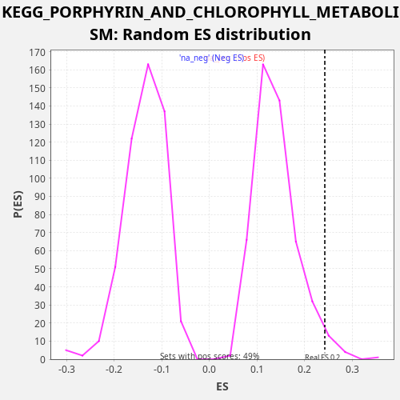

Profile of the Running ES Score & Positions of GeneSet Members on the Rank Ordered List
The same image in compressed SVG format
| Dataset | TCGA |
| Phenotype | NoPhenotypeAvailable |
| Upregulated in class | na_pos |
| GeneSet | KEGG_PORPHYRIN_AND_CHLOROPHYLL_METABOLISM |
| Enrichment Score (ES) | 0.24281992 |
| Normalized Enrichment Score (NES) | 1.7536261 |
| Nominal p-value | 0.024539877 |
| FDR q-value | 0.08874763 |
| FWER p-Value | 0.835 |
| SYMBOL | RANK IN GENE LIST | RANK METRIC SCORE | RUNNING ES | CORE ENRICHMENT | |
|---|---|---|---|---|---|
| 1 | UGT1A1 | 95 | 7.350 | 0.0213 | Yes |
| 2 | UGT2B28 | 199 | 4.702 | 0.0421 | Yes |
| 3 | UGT1A6 | 390 | 3.155 | 0.0583 | Yes |
| 4 | CP | 1102 | 1.215 | 0.0467 | Yes |
| 5 | UGT1A9 | 1151 | 1.151 | 0.0705 | Yes |
| 6 | COX15 | 1499 | 0.814 | 0.0783 | Yes |
| 7 | UGT1A10 | 2016 | 0.527 | 0.0772 | Yes |
| 8 | ALAS2 | 3792 | 0.122 | 0.0090 | Yes |
| 9 | UGT2B11 | 4022 | 0.100 | 0.0231 | Yes |
| 10 | UGT1A4 | 5094 | 0.034 | -0.0076 | Yes |
| 11 | UGT1A7 | 5109 | 0.033 | 0.0180 | Yes |
| 12 | CPOX | 5329 | 0.025 | 0.0326 | Yes |
| 13 | UGT2B4 | 5525 | 0.020 | 0.0485 | Yes |
| 14 | UGT1A5 | 5527 | 0.020 | 0.0748 | Yes |
| 15 | COX10 | 5756 | 0.015 | 0.0890 | Yes |
| 16 | HMOX2 | 6229 | 0.007 | 0.0902 | Yes |
| 17 | FECH | 7015 | 0.001 | 0.0747 | Yes |
| 18 | UGT1A3 | 7177 | 0.000 | 0.0924 | Yes |
| 19 | EARS2 | 7289 | 0.000 | 0.1128 | Yes |
| 20 | MMAB | 7414 | 0.000 | 0.1325 | Yes |
| 21 | UROD | 7474 | -0.000 | 0.1557 | Yes |
| 22 | GUSB | 8498 | -0.006 | 0.1276 | Yes |
| 23 | HCCS | 8583 | -0.007 | 0.1494 | Yes |
| 24 | FTH1 | 9587 | -0.026 | 0.1223 | Yes |
| 25 | UGT1A8 | 9703 | -0.029 | 0.1425 | Yes |
| 26 | BLVRB | 10594 | -0.067 | 0.1214 | Yes |
| 27 | ALAS1 | 10795 | -0.078 | 0.1371 | Yes |
| 28 | PPOX | 10809 | -0.078 | 0.1627 | Yes |
| 29 | UGT2A3 | 11226 | -0.107 | 0.1669 | Yes |
| 30 | UGT2B10 | 11856 | -0.164 | 0.1597 | Yes |
| 31 | UGT2B7 | 11973 | -0.177 | 0.1798 | Yes |
| 32 | UGT2B15 | 12194 | -0.204 | 0.1944 | Yes |
| 33 | BLVRA | 12200 | -0.205 | 0.2205 | Yes |
| 34 | HMBS | 12276 | -0.217 | 0.2428 | Yes |
| 35 | UROS | 12909 | -0.327 | 0.2355 | No |
| 36 | ALAD | 16186 | -2.534 | 0.0874 | No |
| 37 | UGT2A1 | 17197 | -5.028 | 0.0599 | No |
| 38 | HMOX1 | 18585 | -18.346 | 0.0124 | No |

{kind=link}
{kind=link}